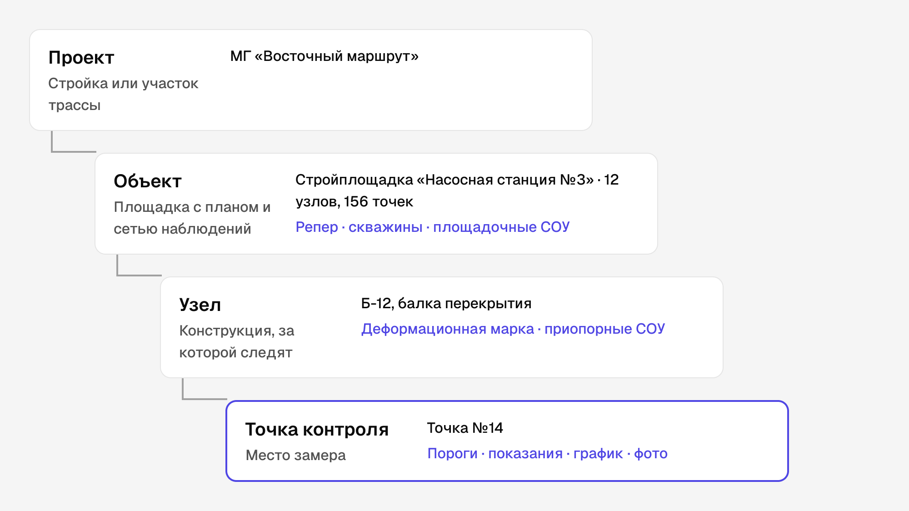
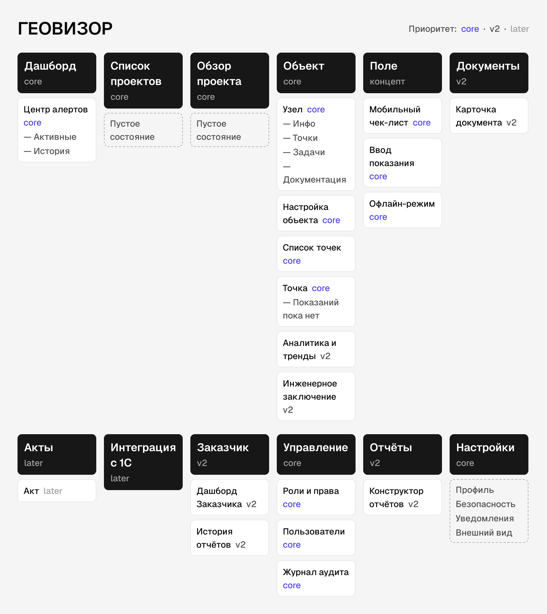
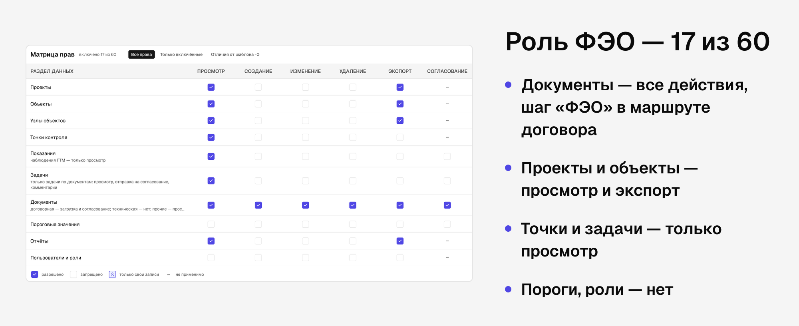
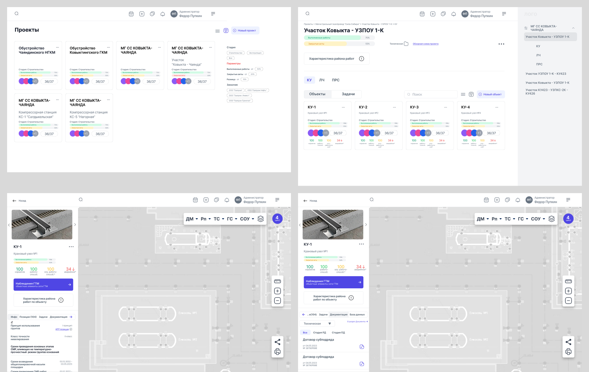

Принципы
- Одно дерево на все роли. Разные ветки открываются правами, а не отдельными интерфейсами.
- Глубина — не больше трёх уровней: главная → раздел → экран.
- Глубина предмета — колонками, а не окнами. «Объект → узел → точка» раскладывается стопкой колонок рядом с планом. Содержательных панелей рядом — не больше двух.
- Переход между вкладками одного предмета не теряет состояние вида.
Модель данных
Проект → Объект → Узел → Точка контроля.
| Уровень | Что это | Пример |
|---|---|---|
| Проект | Стройка или участок трассы | МГ «Восточный маршрут» |
| Объект | Площадка с планом и сетью наблюдений | Стройплощадка «Насосная станция №3», 12 узлов, 156 точек |
| Узел | Конструкция, за которой следят | Б-12, балка перекрытия |
| Точка контроля | Место замера с порогами, показаниями, графиком, фото | Точка №14 |
Что принадлежит объекту, а что узлу, разведено по нормативам: репер и скважины — у объекта, деформационная марка — у узла, термостабилизаторы и визуальные наблюдения — на обоих уровнях. Разбор — в документе Исследование ролей.

Сайтмап
Приоритеты — по MoSCoW из требований продукта: core, v2, later.

| Раздел | Экраны | Приоритет |
|---|---|---|
| Дашборд | Центр алертов: активные, история | core |
| Проекты | Список проектов, обзор проекта | core |
| Объект | Узел (инфо, точки, задачи, документация), настройка объекта, список точек, точка | core |
| Аналитика и тренды, инженерное заключение | v2 | |
| Поле | Мобильный чек-лист, ввод показания, офлайн-режим | core, концепт |
| Документы | Архив, карточка документа | v2 |
| Акты | Реестр актов, акт | later |
| Интеграция с 1С | Настройки | later |
| Заказчик | Дашборд Заказчика, история отчётов | v2 |
| Управление | Роли и права, пользователи, журнал аудита | core |
| Конструктор отчётов | — | v2 |
| Настройки | Профиль, безопасность, уведомления, внешний вид | core |
В чистовых экранах часть веток слилась: документы и акты стали одним разделом «Документация» с договорным контуром, задачи получили свой раздел первого уровня, а алерты — реестр.
Матрица прав
Права задаются по разделам и действиям — всего 60 ячеек. Администратор создаёт роль по шаблону или копией, система защищает последнего администратора от удаления.
| Роль | Что видит и делает |
|---|---|
| Администратор | Всё, включая роли, права и журнал аудита |
| Руководитель проекта | Проекты и объекты, задачи с приёмкой, согласование документов |
| Аналитик | Точки, показания, пороги, заключения, шаг согласования акта |
| Оператор | Свои задачи, показания и фото по точкам |
| ФЭО | Документы полностью, проекты и объекты — просмотр и экспорт, точки и задачи — только просмотр. 17 из 60 |
| Заказчик | Свои объекты и согласованные документы, только просмотр |
Роль ФЭО. Изначально в продукте был «Финансовый отдел». Когда появился договорный контур, мы сравнили два варианта: переименовать системную роль или завести отдельную рядом. Отдельная роль отличалась бы всего тремя правами из 60 — это порог, при котором новую роль заводить не стоит. Выбрали переименование: права сверили со старым прототипом, а шаг «ФЭО» в маршруте договора согласует любой человек этой роли.

От low-fi к чистовым экранам
Первым этапом был большой low-fi прототип: 8 секций, 307 десктоп-кадров, 142 уникальных экрана. Он охватил вход, аккаунт, календарь, проекты, объект и карту, элементы ГТМ, трубопровод, задачи, документы и управление ролями.
Перед чистовыми экранами я провёл инвентаризацию: какие экраны есть, какие роли их используют, чего не хватает. Так появились три дорисованных экрана-пробела: сводный дашборд алертов, мобильный ввод показаний и журнал аудита.
| Low-fi | Чистовые экраны | |
|---|---|---|
| Кадров | 307 | 298 (149 Light + 149 Dark) |
| Уникальных экранов | 142 | 149, у каждого есть тёмная пара |
| Из чего собраны | Нарисованные кадры | 147 мастер-компонентов и 121 токен |
| Прототип | — | 2 488 связей, 25 сценариев, рабочий прототип на 64 маршрута |
Кадров почти столько же, но в low-fi это были копии одних и тех же экранов с разным наполнением. В чистовых каждый кадр — отдельное состояние продукта.
